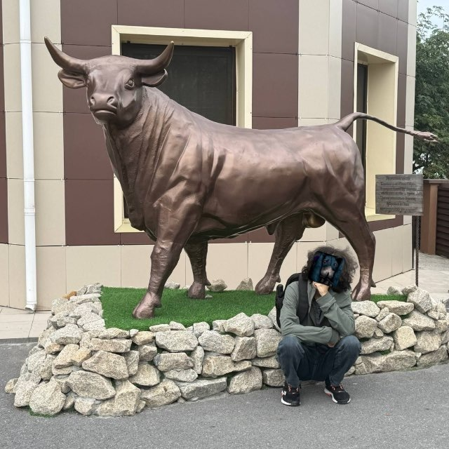

Меня зовут Прошунин Павел. Это мой личный сайт.
Я студент Нижневартовского государственного университета.
НВГУ — это высшее учебное заведение в городе Нижневартовске. Основан 12 июля 1988 года как филиал ТГПИ; статус университета получил в 2013 году.
В свободное время я занимаюсь тем, что мне действительно нравится:
Вы можете связаться со мной по электронной почте:
📧 proshuninpavelgames@gmail.com